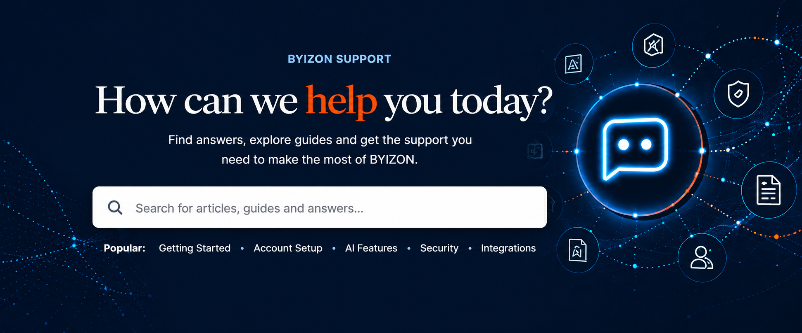
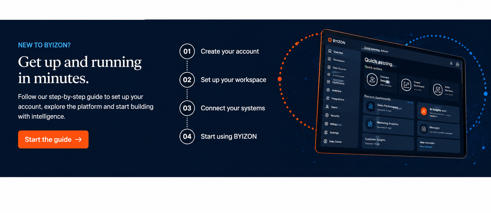

Getting Started
Everything you need to start using BYIZON.
Explore guides →
Everything you need to start using BYIZON.
Explore guides →Learn how BYIZON's platform, intelligence and features work.
Explore features →Understand how BYIZON approaches security, privacy and trust.
Learn more →Need help from our team? We're here to support you.
Contact support →Account setup, onboarding and platform basics.
12 Articles →→Manage your account, plans, invoices and subscriptions.
18 Articles →→Learn about BYIZON AI capabilities and intelligent systems.
16 Articles →→Security controls, privacy, compliance and trusted access.
20 Articles →→Connect BYIZON with your existing tools and workflows.
14 Articles →→Understand data, analytics and enterprise intelligence.
15 Articles →→Manage teams, permissions, access and AI governance.
13 Articles →→Find solutions to common issues and technical problems.
22 Articles →→
Technical documentation for developers and teams.
View Documentation →Best practices for building trusted intelligent systems.
Explore Guides →Research, updates and perspectives from BYIZON.
Read Insights →Can't find the answer you're looking for? Connect with the BYIZON team and we'll help point you in the right direction.
Explore the BYIZON Help Center or connect with our team for additional support.